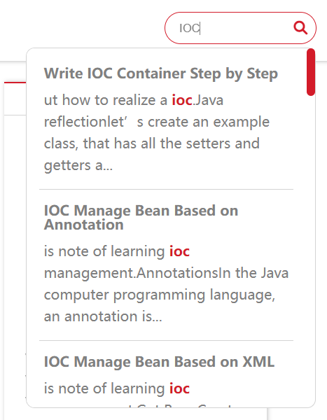
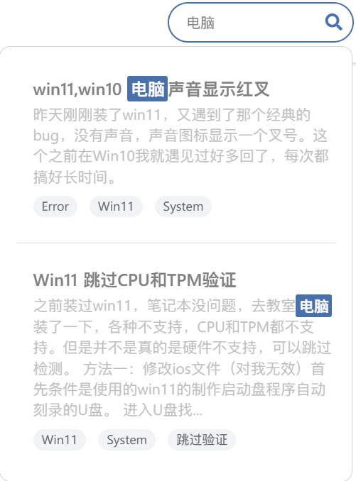

第三方功能
目录
toc:
on: true
搜索功能
主题支持三种搜索引擎：本地搜索（local）、Lunr.js搜索和Algolia云搜索。根据您的需求选择合适的搜索方式。
搜索引擎对比
| 搜索引擎 | 性能 | 中文支持 | 部署难度 | 推荐场景 |
|---|---|---|---|---|
| Local | 较慢 | 基础支持 | 简单 | 小型站点，快速部署 |
| Lunr | 快速 | 优秀 | 简单 | 中大型站点，最佳选择 |
| Algolia | 极快 | 优秀 | 复杂 | 大型站点，需要高级搜索功能 |
search:
enable: true
engine: lunr
local:
path: search.xml
lunr:
path: search.json
maxResults: 30
minQueryLength: 1
debounceTime: 300
algolia:
# Algolia 配置在站点根目录 _config.yml 中设置


配置参数说明
| 参数 | 说明 | 默认值 | 适用引擎 |
|---|---|---|---|
enable |
启用搜索功能 | true |
所有 |
engine |
搜索引擎类型：local, lunr, algolia |
lunr |
所有 |
| Local 搜索参数 | |||
local.path |
搜索文件路径，需与站点 _config.yml 中的 search.path 匹配 |
search.xml |
Local |
| Lunr 搜索参数 | |||
lunr.path |
搜索文件路径，建议使用 JSON 格式提升性能 | search.json |
Lunr |
lunr.maxResults |
最大搜索结果显示数量 | 30 |
Lunr |
lunr.minQueryLength |
最小查询长度（1允许单字符搜索，适合中文/日文） | 1 |
Lunr |
lunr.debounceTime |
搜索延迟（毫秒，减少服务器负载） | 300 |
Lunr |
| Algolia 搜索参数 | |||
algolia.* |
Algolia 的所有配置需在站点根目录的 _config.yml 中设置 |
- | Algolia |
安装和配置
安装依赖插件
根据选择的搜索引擎，安装对应的插件：
npm install hexo-generator-search
npm install hexo-algoliasearch --save
配置站点搜索
在站点根目录的 _config.yml 文件中添加搜索配置：
search:
path: search.xml
field: all
content: true
search:
path: search.json # 使用 JSON 格式提升性能
field: all
content: true
algolia:
appId: "YOUR_APP_ID"
apiKey: "YOUR_SEARCH_ONLY_API_KEY"
adminApiKey: "YOUR_ADMIN_API_KEY"
indexName: "YOUR_INDEX_NAME"
chunkSize: 5000
fields:
- content:strip:truncate,0,500
- excerpt:strip
- tags
- title
- path
Algolia 额外步骤
如果使用 Algolia 搜索，每次更新内容后需要手动上传索引：
npx hexo algolia
注意：
- Algolia 需要单独的插件
hexo-algoliasearch，不是hexo-generator-search - 每次发布新内容后，都需要运行
npx hexo algolia命令更新搜索索引 - 确保在 Algolia 控制台中已创建对应的索引
分享功能
https://github.com/overtrue/share.js
Share:
on: true
datasites: "facebook,twitter,qq,wechat,qzone,weibo"
wechatQrcodeTitle: "微信扫一扫：Share"
datasites是可以分享的站点，有这么多可以选择

微博、QQ空间、QQ好友、微信、腾讯微博、豆瓣、Facebook、Twitter、Linkedin、Google+、点点等社交网站。（其中Google+好像已经不能使用）
可以按照任意顺序组合
wechatQrcodeTitle：微信分享功能的悬浮二维码的标题
评论功能(没完成，只完成了valine)
valine:
on: true
appId: # App ID
appKey: # App Key
verify: true # 验证码
notify: true # 评论回复邮箱提醒
avatar: mp # 匿名者头像选项
placeholder: Leave your email address so you can get reply from me!
lang: zh-cn
guest_info: nick,mail,link
pageSize: 10
具体如何使用后续会写
数学公式
mathjax:
enable: true
per_page: true
cdn: https://cdn.jsdelivr.net/npm/mathjax/MathJax.js?config=TeX-AMS-MML_HTMLorMML
需要hexo插件hexo-math 和 hexo-renderer-kramed 的支持
npm install hexo-math hexo-renderer-kramed
cdn可以自己配置，但是一般默认的就行。
是用kramed渲染，语法要求比较严格，需要绝对的正确的语法才能正确渲染，比如一些空格不能省略，因为它没有Typora使用的pandoc渲染功能强大。
如果出现无法渲染的情况，尝试进行如下操作：
-
进入
/node_modules/kramed/lib/rules/inline.js文件 -
注释11行
escape，添加一行:
// escape: /^\\([\\`*{}\[\]()#$+\-.!_>])/,
escape: /^\\([`*\[\]()#$+\-.!_>])/,
- 注释21行
em，添加一行:
// em: /^\b_((?:__|[\s\S])+?)_\b|^\*((?:\*\*|[\s\S])+?)\*(?!\*)/,
em: /^\*((?:\*\*|[\s\S])+?)\*(?!\*)/,
- 保存修改
一般内联公式渲染正确，行间公式渲染错误，考虑是否行间公式出现语法错误，必须使严格语法正确。
站点访问统计(目前只实现了一种)
不蒜子
visits:
on: true